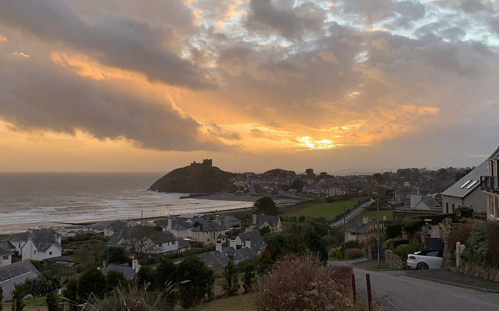

De patria a patria
Un viaje épico de Kentucky a Burundi pasando por Gales y Ucrania
Conoce un poco mejor los lugares de los que proceden tus colegas en línea
Todo ser humano es un artista, un ser de la libertad, llamado a participar en la transformación y reforma de las condiciones, el pensamiento y las estructuras que conforman e influyen en nuestras vidas.
La ciudad de TripleTen ha reunido a profesionales de diferentes rincones del mundo. Hoy, la Galería de Arte TripleTen se enorgullece de presentar historias y fotografías de algunas de las personas que dedican su tiempo y esfuerzo a hacer que los futuros profesionales de la tecnología de esta ciudad se sientan como en casa. Cada uno de nosotros tiene una historia única sobre el lugar del que procede. No dudes en añadir a nuestra colección tu propia historia y una obra de arte visual dedicada a tu ciudad natal. No importa de dónde seas, nos alegra que seas nuestro vecino.